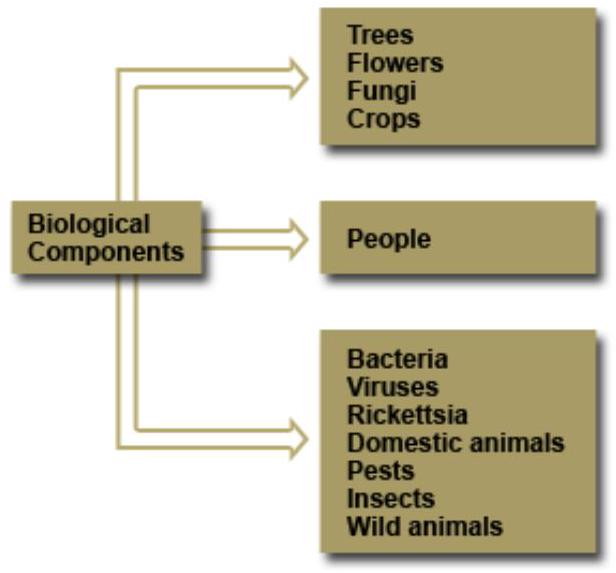
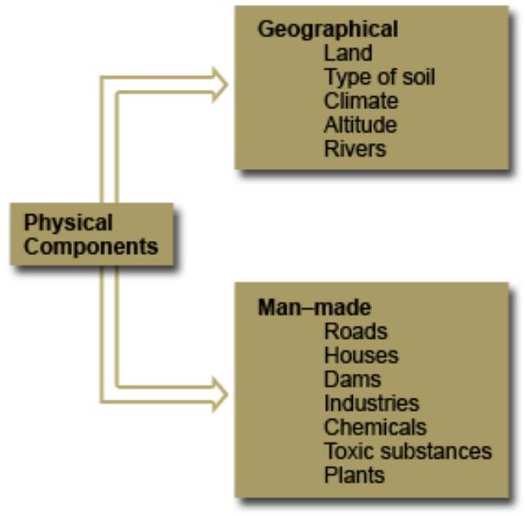
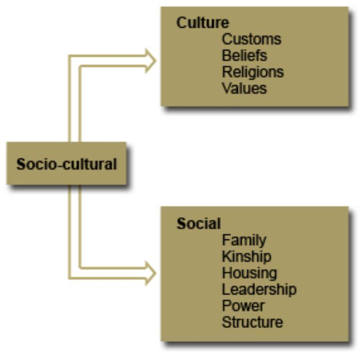

Environmental Health: The Mentor Nurse
Introduction
This unit focuses on the components of environment and their effect on humans, water and sanitation, appropriate methods of handling food, and the effects of housing on health. The final section will focus on how the community nurse should mobilise the community in the control of vectors and pests in their environment. Environmental health is one of the most important aspects of primary prevention of diseases. The community health nurse and all the other health workers have a responsibility to assist their communities to improve their environment.
This unit is composed of five sections:
- Section One: Health and the Environment
- Section Two: Water and Sanitation
- Section Three: Appropriate Methods of Handling Food
- Section Four: Housing
- Section Five: Control of Vectors and Pests
Unit Objectives
By the end of this unit you will be able to:
- Explain the importance of environment to community health
- Describe water and sanitation in relation to health
- Outline appropriate methods of handling food
- Describe the effects of housing on health
- Mobilise the community in the control of vectors and pests
SECTION 1: HEALTH AND THE ENVIRONMENT
Introduction
Welcome to section one of the Environmental Health unit. Since the environment comprises all things that make up your surroundings, environmental health, therefore, describes the aspects of health related to or emanating from your interaction with the environment.
Objectives
- Define the environment
- Explain the components of the environment
- Describe the effects of environmental factors on health
Environmental Components and their Effect on your Health
The following factors can have an effect on your health:
- Biological environment
- Physical environment
- Socio-cultural environment
- Economic and political components of the environment
Biological Environment
The biological component of the environment is made up of living things, which include plants, people and animals. The adjacent figure shows some examples of biological components.
Plants
Vegetation prevents soil erosion and also protects our water sources. Trees act as windbreakers, provide firewood, charcoal, timber and paper among others. They also influence weather patterns. Flowers are a natural beauty and are often used for decoration. Plants provide vegetables, fruits, tubers and seeds as food.
A number of plants are used as herbal medicine for the treatment of various diseases, for example, the Neem tree locally known as muarobaine, is used for the treatment of malaria, among many other diseases. Garlic is used to treat hypertension. The aloe vera plant is used for prevention of cancer of the stomach and healing of wounds. On the other hand, some plants may adversely affect health. Occasionally, people react to pollen from blooming plants and may develop hay fever or asthma. Ingesting or touching some poisonous plants may have devastating effects.
People
Human beings and their activities can be a big source of infection. For example, overcrowding and slum settlements brought about by urbanisation, can promote the transmission of diseases, especially those diseases that are spread through droplets and contact. Explosions from quarries produce a lot of dust, which causes respiratory and eye problems. When it rains, these quarries collect water and become breeding sites for mosquitoes and risky places for children.
The felling of trees provides firewood and charcoal but, at the same time, it destroys the water sources. Cultivating along riverbanks may contaminate the water supply through seepage of the fertilizers and pesticides used on the crops. Overgrazing causes soil erosion, destroys vegetation and contaminates water sources.
Animals
Domestic animals such as cattle, sheep, goats and poultry provide meat, milk and eggs for consumption. Some of them supply hides and wool for commercial purposes. They also provide manure, which is used to increase food produce. Wildlife is often a tourist attraction and acts as a source of income for our country. Cats and dogs are kept as pets, but they can also transmit diseases such as cat scratch fever and rabies, respectively. Other hazards include snakebites, which can be fatal and insect bites, which may act as vectors of various diseases. For example, mosquitoes are vectors of malaria, yellow fever and filariasis. Houseflies are vectors of dysentery and other diarrhoeal diseases. Bacteria, rickettsia and fungi are also part of the biological environment and are disease-causing organisms in man.
Physical Environment
The physical components of the environment are divided into geographical and man-made components. Land is used for settlements. When the land is fertile and well used, it provides enough food for consumption. On the other hand, when the land is infertile, the food supply will be inadequate, resulting into nutritional problems.
The type of soil, climate and altitude determine the type of crops that can be grown in a specific area. Some crops will do well in a hot climate, others will not. For example, tea, peas and pyrethrum thrive in cool climates. However, cold climates encourage respiratory diseases and joint problems such as arthritis. In hot climates, most legumes and fruits such as oranges and mangoes do well. Diseases associated with hot climates include malaria.
Snakes are also common in hot areas and their bites can be fatal. Some disease outbreaks occur during the rainy season, for example, cholera, typhoid and malaria. Similarly, during dry seasons there may be a shortage of food leading to malnutrition. Persistent crop failure will lead to food insecurity and famine.
Each type of climate has its own pattern of vegetation and animals to control. Man has to adjust to the animals and the vegetation since they affect health. Additionally, to adjust to the different temperatures man has to use appropriate clothing.
Therefore, constructing houses too close to a dam or where animals are kept facilitates the transmission of vector borne diseases. Industrial wastes that consist of chemicals and toxic substances, may also pollute the water, air and food. Moreover, dampness in houses favours the transmission of airborne diseases. It is your responsibility as a health worker to identify ways of helping the community to improve their environment. You have to be a role model in your homes, health facilities and also in assisting various community development projects.
Pollution
Pollution is the term used to describe the spoiling of natural resources such as air, food and water by harmful substances. Industrial waste such as smoke can pollute the air and water. Other industrial wastes can pollute the soil and vegetation. In the rural areas, where people are involved in agricultural activities, pollution may result from the use of insecticides, pesticides and industrial waste.
Environmental health problems however are usually more prevalent in towns and slums than in rural areas. As a health worker you can make a difference in the community by assisting individuals, families and the community to make their environment healthy.
Socio-Cultural Environment
The figure on your right illustrates some of the socio-cultural factors that may affect health and health practices.
Some of the health issues affected by these factors are food habits and cooking practices. Different communities have different food habits and cooking practices. For example, the Kikuyu community have maize and beans (Githeri) as their staple food whereas the Luo community have a cooked preparation of maize flour (Ugali) as their staple food.
Food taboos also vary from one community to the other. Examples of food taboos include prohibiting pregnant mothers from taking some types of meat, believed to affect the foetus. Wife inheritance and polygamy practices encouraged by some communities provide an opportunity for spreading sexually transmitted diseases and HIV/AIDS. Tattoos performed for beautification and circumcision are other practices where the procedures may be carried out using unsafe instruments and can easily transmit diseases like HIV/AIDS among others. Female genital mutilation can lead to difficult deliveries. Some people discourage breast-feeding practice considering it to be primitive. This denies the child all the benefits of breast-feeding. Other people do not make use of the available prenatal and delivery services. This affects the growth of the baby and the health of the mother.
Customs and beliefs have an effect on human health. Identify those beliefs that you think you need to discuss with the community to change and those to uphold. It is important to listen to the community's reasons for their beliefs and practices. This will facilitate the choice of the health measures and suitable solutions after discussion.
Economic and Political Components of the Environment
These components include work, money and government. The economic factor relates to both rural and urban economies as well as local community organisation. Rural and urban economics will determine to a great extent the quality of environmental health. People can change their environment either positively or negatively. Some of these changes are described as development.
Some development projects may make the environment healthier, while others make it a suitable habitat for diseases. An example is that of irrigation schemes for growing rice, which is a cash crop. This improves the peoples' income, but at the same time, rice fields are breeding sites of mosquitoes and snails, which are vectors of malaria and schistosomiasis respectively.
Other examples of the relation between health and economic status abound. People of low economic status may resort to drinking as a way of relieving their stress. This is usually at the expense of the family budget for basic needs and may lead to health problems. The rich also may suffer from diseases of life style such as obesity, gout, and hypertension among others. The government involves political influences into development policies.